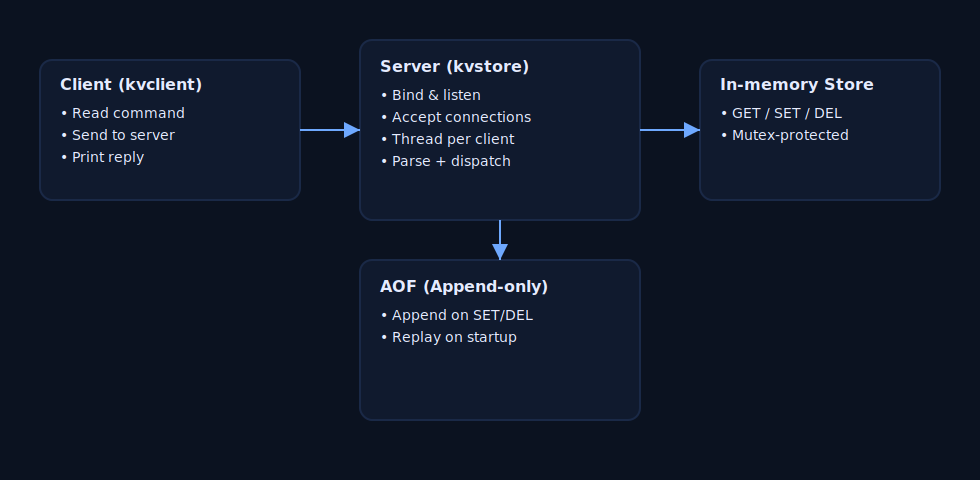

What it is
Minimal server implementing PING, SET, GET, DEL.
Why it matters
Shows core systems concepts: networking, concurrency, durability.
Key features
- C++17, POSIX sockets, threads
- Append-only (AOF) + replay
- Simple text protocol
Tech
- CMake
- mutex-guarded in-memory store
- thread-per-connection
Architecture at a glance
Quick demo
# build ./scripts/build.sh # run server ./scripts/run.sh # try commands (second terminal) printf "PING SET foo bar GET foo DEL foo " | ./build/kvclient 127.0.0.1 6380